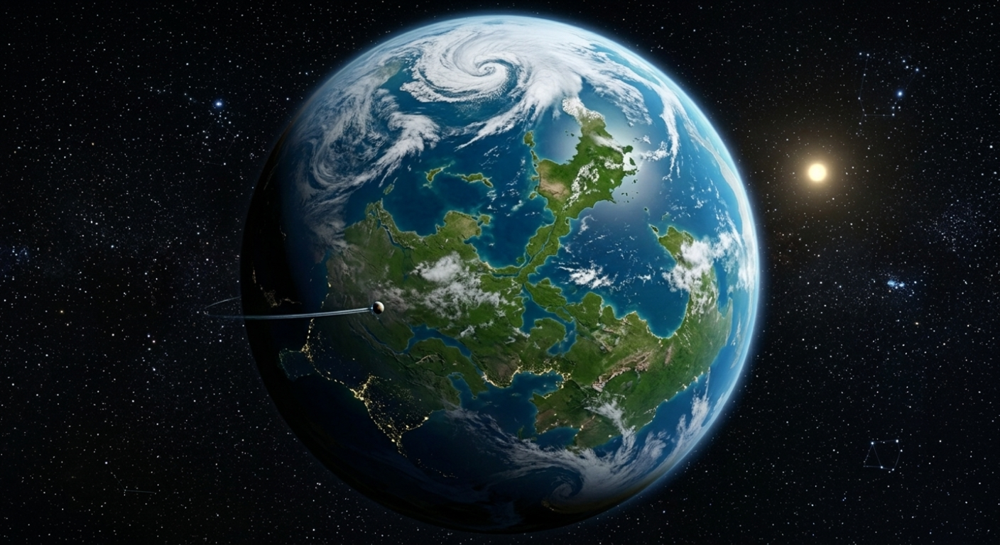
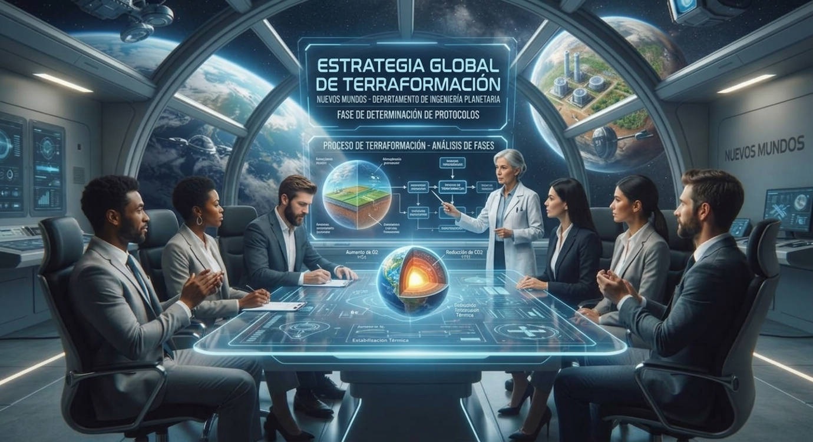
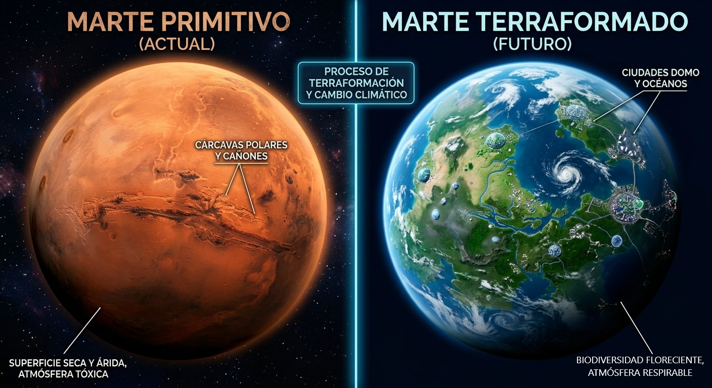
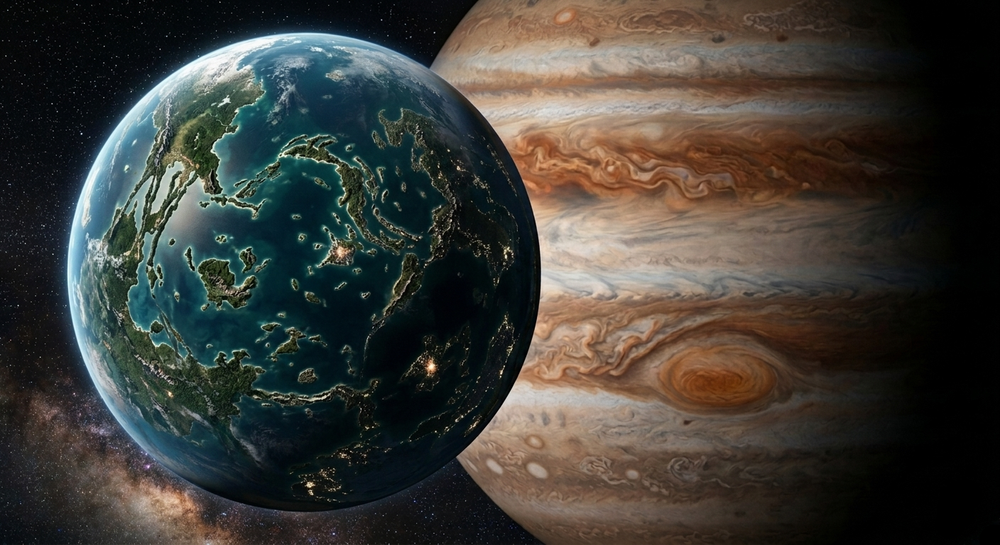
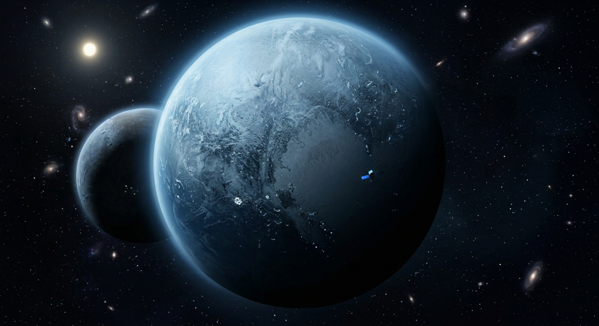

Venus terraformado
La gemela de la tierra vuelta a su máximo esplendor

En Nuevos Mundos, no solo te vendemos un hogar en el espacio; diseñamos el futuro de nuestra especie. Sabemos que dar el gran salto hacia las estrellas puede generar dudas, por lo que queremos explicarte el pilar fundamental que hace habitables nuestras propiedades: la terraformación.
La terraformación es el proceso científico y tecnológico mediante el cual modificamos la atmósfera, la temperatura, la topografía y la ecología de un cuerpo celeste (como un planeta o una luna) para simular las condiciones ambientales de la Tierra. En términos sencillos: tomamos mundos hostiles, congelados o desérticos, y los transformamos en paraísos verdes con aire respirable y agua líquida.

La gemela de la tierra vuelta a su máximo esplendor

El planeta rojo como se teoriza que fue durante una etapa temprana del sistema solar

La principal luna de Júpiter modificada de tal forma en la que pueda ostentar vida.

El frigido planeta terraformado para intentar sostener la vida igual mantuvo alguna similitud a su clima previo, creando un clima exotico para exploradores que desean una aventura.